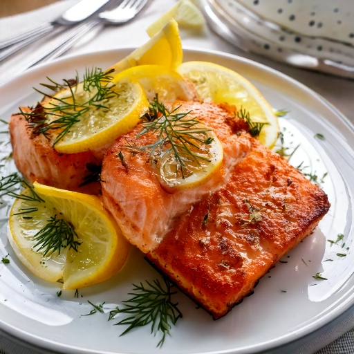

Salmon fillet na hinaluan ng bawang at dill, ni-bake hanggang maging flaky at tinapusan ng fresh lemon.
Impormasyon sa Nutrisyon (bawat serving)
428
Calories
4g
Carbs
35g
Protein
29g
Fat
1g
Fiber
~0
GI Est.
Bakit Ito Bagay sa Diyetang Diabetic-Friendly
Sa 4g lang na carbs kada serving, kasya ito nang komportable sa karamihan ng low-carb na meal plan para sa diabetes, at ang tinatayang glycemic index nitong ~0 ay nangangahulugang mabagal ma-digest ang carbs nito sa halip na biglang magpataas ng asukal sa dugo, at ang 35g ng protein kada serving ay tumutulong din para mapabagal ang digestion at mapakinis ang anumang pagtaas pagkatapos kumain.
Mga Sangkap
- 12 oz340 g salmon fillet
- 1 whole1 whole lemon
- 2 clove2 clove bawang
- 1 tbsp15 ml fresh dill
- 1 tbsp15 ml olive oil
- 1/4 tsp1 ml black pepper
Nasa App Na
Nasa GlucoBeacon app na ang recipe na ito — idagdag agad sa iyong Shopping List at daily carb tracker sa isang tap, libre.
Nasa app din — libre
- 🍽️ Restaurant Advisor — 3,700+ menu items mula sa 53 chains
- 📷 AI Food Camera — i-point, i-scan, malaman agad ang carbs
- 🩺 A1C Estimator — mula sa mga naka-log na reading mo
Paraan ng Paggawa
- I-preheat ang oven sa 400°F (200°C).
- Ipahid ang olive oil, bawang, dill, at black pepper sa salmon.
- I-bake ng 12–15 minuto hanggang madaling mag-flake ang isda.
- Tapusin ng fresh lemon juice at zest bago ihain.